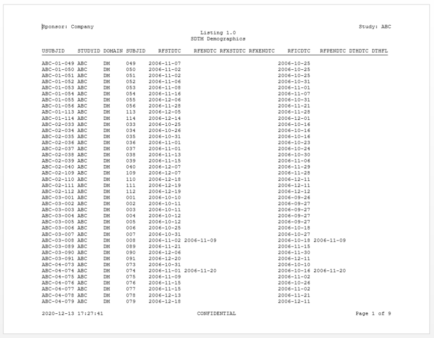

Here is an example of a simple listing using the sassy system of functions. The data used for these examples is included in the sassy package, and also available for download here.
Note the following about this example:
sep() function creates a nice separator in the log
to help keep it organized and readable.put() function will write anything you want to the
log, similar to a SAS® %put() statement.libname() function from the libr package loads an
entire directory of data files, just like a SAS® libname
statement.lib_load() function loads the data into the
workspace for easy access, and gives you a two-level
(<library>.<dataset>) dataset reference like SAS®.
library(sassy)
options("logr.autolog" = TRUE,
"logr.notes" = FALSE)
# Get path to temp directory
tmp <- tempdir()
# Get path to sample data
pkg <- system.file("extdata", package = "sassy")
# Open log
lgpth <- log_open(file.path(tmp, "example1.log"))
sep("Get Data")
# Define data library
libname(sdtm, pkg, "csv")
# Load library into workspace
lib_load(sdtm)
sep("Write Report")
# Define table object
tbl <- create_table(sdtm.DM) |>
define(USUBJID, id_var = TRUE)
# Construct report path
pth <- file.path(tmp, "output/l_dm.rtf")
# Define report object
rpt <- create_report(pth, output_type = "RTF", font = "Courier") |>
page_header("Sponsor: Company", "Study: ABC") |>
titles("Listing 1.0", "SDTM Demographics") |>
add_content(tbl, align = "left") |>
page_footer(Sys.time(), "CONFIDENTIAL", "Page [pg] of [tpg]")
# Write report to file system
write_report(rpt)
# Unload data
lib_unload(sdtm)
# Close log
log_close()
# View report
# file.show(pth)
# View log
# file.show(lgpth)Here is an image of the first page of the RTF report produced by the above listing example:

Here is the log produced by the above listing example:
=========================================================================
Log Path: C:/Users/User/AppData/Local/Temp/Rtmpum5T6o/log/example1.log
Working Directory: C:/packages/Testing
User Name: User
R Version: 4.0.3 (2020-10-10)
Machine: DESKTOP-1F27OR8 x86-64
Operating System: Windows 10 x64 build 18363
Log Start Time: 2021-01-05 08:05:09
=========================================================================
=========================================================================
Get Data
=========================================================================
# library 'sdtm': 8 items
- attributes: csv not loaded
- path: C:/Users/User/Documents/R/win-library/4.0/sassy/extdata
- items:
Name Extension Rows Cols Size LastModified
1 AE csv 150 27 88.1 Kb 2020-12-27 23:21:55
2 DA csv 3587 18 527.8 Kb 2020-12-27 23:21:55
3 DM csv 87 24 45.2 Kb 2020-12-27 23:21:55
4 DS csv 174 9 33.7 Kb 2020-12-27 23:21:55
5 EX csv 84 11 26 Kb 2020-12-27 23:21:55
6 IE csv 2 14 13 Kb 2020-12-27 23:21:55
7 SV csv 685 10 69.9 Kb 2020-12-27 23:21:55
8 VS csv 3358 17 467 Kb 2020-12-27 23:21:55
lib_load: library 'sdtm' loaded
=========================================================================
Write Report
=========================================================================
# A report specification: 9 pages
- file_path: 'C:\Users\User\AppData\Local\Temp\Rtmpum5T6o/output/l_dm.rtf'
- output_type: RTF
- units: inches
- orientation: landscape
- line size/count: 108/48
- page_header: left=Sponsor: Company right=Study: ABC
- title 1: 'Listing 1.0'
- title 2: 'SDTM Demographics'
- page_footer: left=2021-01-05 08:05:14 center=CONFIDENTIAL right=Page [pg] of [tpg]
- content:
# A table specification:
- data: tibble 'sdtm.DM' 87 rows 24 cols
- show_cols: all
- use_attributes: all
- define: USUBJID id_var='TRUE'
lib_sync: synchronized data in library 'sdtm'
lib_unload: library 'sdtm' unloaded
=========================================================================
Log End Time: 2021-01-05 08:05:17
Log Elapsed Time: 0 00:00:07
=========================================================================
Next: Example 2: DM Table